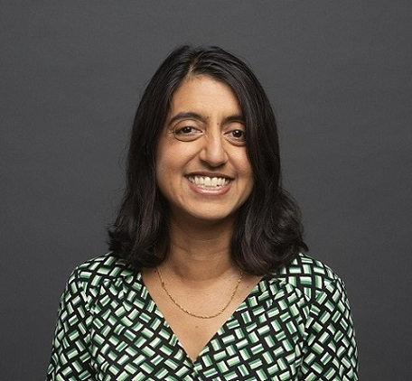

 |
Seema Jayachandran
Kenneth J. Boudreaux '65 Professor of Economics and Public Affairs
Princeton University
126 Julis Romo Rabinowitz Building
Princeton NJ 08544
jayachandran@princeton.edu
I am on sabbatical for 2025-26
|
|
|
Seema Jayachandran is the Kenneth J. Boudreaux '65 Professor of Economics and Public Affairs at Princeton University. Her research focuses on environmental conservation, gender equality, and other microeconomic topics in developing countries.
She serves on the board of directors of the Abdul Latif Jameel Poverty Action Lab (J-PAL) and leads J-PAL's gender sector. She is also co-director of the National Bureau of Economic Research's program in Development Economics and co-editor of American Economic Review: Insights. In addition, she serves on the board of directors of CARE and the advisory councils of the Millenium Challenge Corporation and Rainforest Trust.
Prior to joining Princeton, she was a faculty member at Northwestern University and Stanford University. She earned a PhD in economics from Harvard University, a master's degree in physics and philosophy from the University of Oxford where she was a Marshall Scholar, and a bachelor's degree in electrical engineering from MIT.
|
|